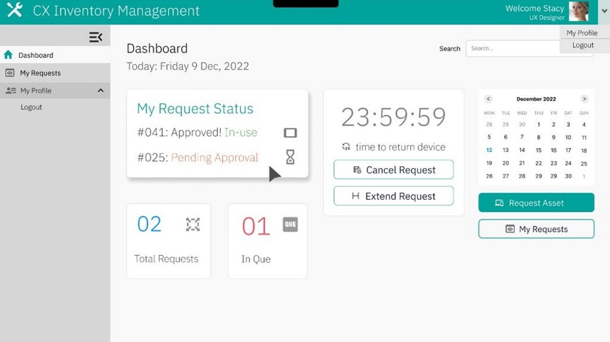

Inventory Management
Designed an inventory management system from scratch that, helps virtual tracking of physical assets and its status

Challenge & Scope
The CX practice & project managers faced issues tracking down physically handed over assets to internal project team members. There was a manual process involved in letting assets to project teams which lead to human errors while capturing the serial number, model numbers etc. Which also lead to missing assets servicing within the warranty period, due to wrongly captured info.
The Solution
Deep dived into the business need, based on hypothetical assumptions, crafted out workflow tasks, built personas, and journey maps that aligned business goal. Targeted majorly two user groups admin, employee and designed dashboard UI that displayed assets current and past usage history status upfront. This helped management track down the physical assets along with its warranty status, so that could reduce carbon footprint by discarding outdated out-of-warranty assets beforehand.
Designed an online inventory management system from scratch that, helps capture physical assets (such as hand held devices, laptops, iPads, mobile phones etc.) in online repository and enable teams to request assets, extend booking, transfer and handover assets to other members within the project thereby reducing dependency on IT/ admin/ procurement teams.